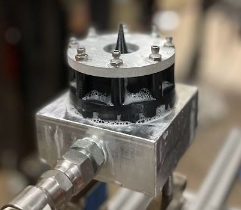
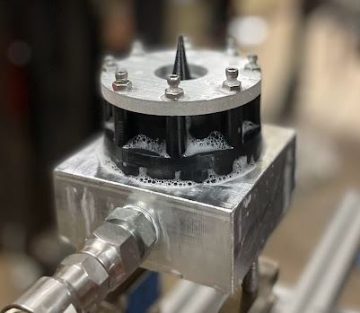

Jayden Ma
Poughkeepsie, NY - Boston, MA
Boston University
Class of 2022
Mechanical and Aerospace Engineer
Poughkeepsie, NY - Boston, MA
Boston University
Class of 2022
Mechanical and Aerospace Engineer
In Fall 2021, a team of 4 from the Boston University Rocket Propulsion Group including myself proposed testing an aerospike nozzle for the two-semester senior capstone course. While aerospikes are of interest due to producing optimal thrust at every altitude, there remains fundamental issues in actively cooling the assembly and controlling the thrust vector which continue to be researched today. The team tested a variety of configurations to achieve thrust vectoring with secondary fluidic injection.

Simulation from a previous research paper, showing how flow from secondary injection port vectors the thrust upwards.
This thrust vectoring method takes advantage of the aerospike's geometry to deliver an impinging flow on the thrust from the central spike, and proving the method would increase the viability of aerospike engines in industry. We named the aerospike, and the overall project, Enceladus after the Saturnian moon, because its mass ejection of water-rich jets from the surface is visually simular to the flow from the secondary fluidic injection port.
The massive jets on Enceladus, the project's namesake.
To fit the project within the $2400 allotted, the team used inert gas to simulate propellants and 3D printed the nozzle for rapid iteration. I am the lead fluid systems and test operations engineer working to design, construct, and operate the test stand for the aerospike, due to my internship in rocket testing. I designed the aerospike using an open-source Python code that generates a 2D sketch to revolve when upstream conditions and desired performance metrics are inputted. The code was written by research students at MIT working on aerospike engines, based on C.C. Lee's paper for NASA plug nozzles. For the team's nozzle, upstream conditions are 200 psig of pure nitrogen at room temperature, with an expected thrust of 8.65 lbf. The sketch was revolved to model the nozzle in Solidworks, with a 75% truncation of the spike tip for manufacturability.

Cross-section of 2D curve showing how the secondary fluidic injection will be delivered.
After researching tradeoffs between the feasibility of FDM and SLA and printing test articles, the team found FDM to be superior given its reliability, quality, and availability with the free-to-use campus printers. SLA test articles came out in poor quality with rough and sticky surfaces because of the printer limitations, while FDM test articles printed as expected with smoother surface quality. Since the aerospike was printed in parts due to internal geometry, the team designed and machined an aluminum injector for a better interface with the test stand, as the geometry of the forward end of the aerospike was fixed.
 

(a) CAD assembly of aerospike with component breakdown. (b) Prototype thruster with 3D printed and machined components.
I designed the initial P&ID to simulate propellant feed into the aerospike thruster using inert nitrogen gas from a test stand. The team built and used this design to conduct baseline analysis and testing of a non-thrust vectoring aerospike before adding the thrust vectoring components.
Piping and instrumentation diagram for Enceladus test stand fluid system design.
Once the test stand verifies the aerospike produces nominal design thrust, thrust vector control elements will be installed into the test stand. This involves a secondary flow line that transports nitrogen into the spike and impinges to pitch the thrust away from the axial direction. Because the aerospike is axisymmetric, one direction is tested and is considered a valid simulation for thrust vectoring in the vehicle pitch and yaw.
(a) CAD assembly of test stand. (b) Physical build of test stand.
There would be two load cells measuring axial thrust and a third load cell measuring lateral thrust in the pitched direction, read by an Arduino Uno. The two axial load cells also function as connection points to the test stand, so there are two for stability, and while they will see unequal thrusts when there is thrust vectoring, they can be added up to get total axial thrust. Using trigonometry, the total thrust magnitude and direction can be calculated using the two-axis thrust measurement system.
Data acquisiton setup with all 3 load cells reading.
Computational fluid dynamics is used in parallel with the test stand to verify the calculated 8.65 lbf thrust from the aerospike, and is also used to predict the ideal position and size of port on the spike that would lead to the greatest control authority given a range of pressures. By proving the CFD model using the thrust performance, the team is confident in the model's ability to predict the optimal port parameters and be able to validate the parameters using the test stand. Using compressible flow equations with the profiles for velocity, pressure, density, and temperature, the mass flow and velocity can be extracted from the CFD and be used to calculate the analyzed thrust. Ultimately, 8.6 lbf was calculated from the non-thrust vectoring model, proving the analysis correct.
Computational fluid dynamics from ANSYS Fluent to simulate flow velocity.
Structural analysis was performed on the print to ensure it will not yield as a pressure vessel using an elevated margin of safety given the anisotropic structure of FDM. Nitrile o-rings are used in face seals to prevent propellant leakage out of the thruster between the assembly components. Based on bolt stress calculations and o-ring compression calculations, eight 6-32 bolts are used to fasten the assembly in a radial pattern.
Structural analysis from Solidworks FEA to ensure integrity of design.
After assembling the test stand, the team operated the baseline thrust test and achieved the design thrust with the load cells reading 8 lbf with upstream conditions of 200 psig, validating the code design and CFD analysis which give the same metrics.
Thrust validation testing of Enceladus without thrust vectoring.
The next validation test was ensuring that the load cell system reads properly, before attempting aerospike thrust vectoring. Using textbook rocket nozzle analysis, the team designed and printed an angled conventional cone nozzle to produce 8 lbf of thrust at 15 degrees. Using the same test stand, 200 psig was injected to get thrust data.
(a) CAD model of angled nozzle. (b) Testing of angled nozzle.
The data from the test showed axial and lateral thrust values that would add up to 7.5 lbf of thrust at 14 degrees, which was very close to the design values. Because of this, the team considered the test stand completely validated and could start iterative testing of the aerospike.
Thrust data of angled cone, showing left-half axial thrust, right-half axial thrust, and lateral thrust respectively
We are still researching the optimal position, angle, and pressure for the injection port using the validated test stand, though some preliminary testing has been run with an injection port of 1/16" diameter with 100 psig injection.
Latest test of secondary fluidic injection port showing vectored thrust.
The team has been able to achieve 5 lbf at a 9 degree cant; this is considered a good degree of control based on the Space Shuttle's 12 degrees of control, but it is believed the port can be further optimized to prevent as much thrust magnitude loss. The developed CFD model is also being used to model different parameters at a high-level without having to print and test each individual design, so the team can converge on the parameters that appear the most promising.
Computational fluid dynamics simulation of one possible secondary fluidic injection configuration.